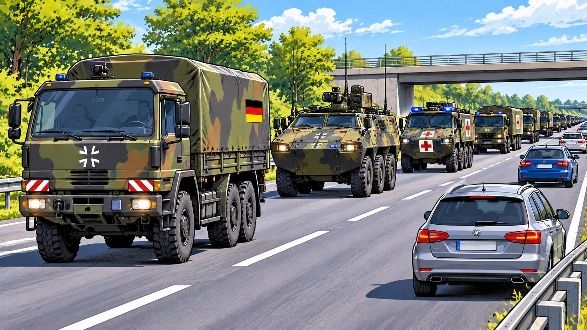

Militärische Nachrichten · A2–B112 – Militärischer Konvoi auf der Autobahn
Nachrichtentext anzeigen
Autofahrer müssen am kommenden Donnerstag auf mehreren Autobahnen in Norddeutschland mit langsamer fahrenden Militärfahrzeugen rechnen. Etwa 80 Fahrzeuge der Bundeswehr werden zu einer mehrtägigen Übung verlegt. Zum Konvoi gehören Transportfahrzeuge, gepanzerte Fahrzeuge und Fahrzeuge des Sanitätsdienstes. Die Fahrzeuge fahren in mehreren Gruppen. Besonders auf den Autobahnen A7 und A27 ist zwischen 6 und 14 Uhr mit einem erhöhten Verkehrsaufkommen zu rechnen. Die Höchstgeschwindigkeit der Militärfahrzeuge beträgt während der Fahrt 80 Stundenkilometer. Die Bundeswehr bittet die Verkehrsteilnehmer um Geduld und ausreichend Sicherheitsabstand. Auch auf einigen Landstraßen kann es vorübergehend zu Verkehrsbehinderungen kommen.